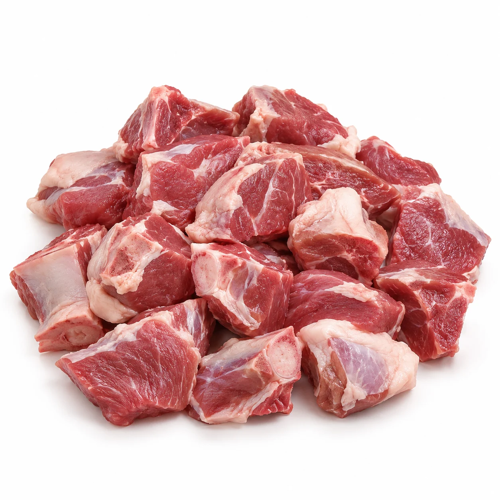
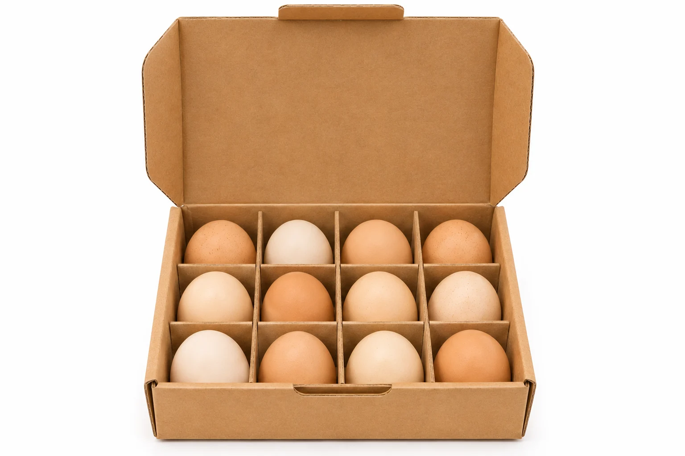

BK AGRO · FARM & NATURAL FOODS
Deshi Chicken
আমাদের খামার থেকে যত্নে প্রস্তুত, পরিষ্কার ও প্রসেস করা দেশি মুরগি।
Buy Now →
FARM & NATURAL FOODS
Farm Fresh Beef
নিজেদের খামারে কাঁচা ঘাস খেয়ে বড় হওয়া গরুর টাটকা মাংস।
Buy Now →

RAISED WITH CARE
Pati Hash & Raj Hash
ধান আর ধানের কুঁড়া খেয়ে বড় হওয়া পাতি হাঁস ও রাজহাঁস।
Buy Now →